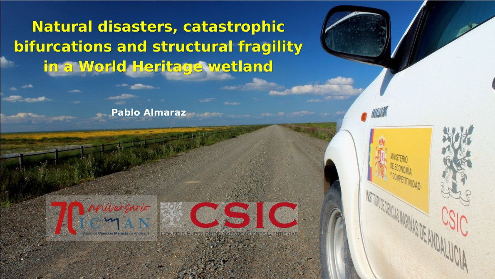
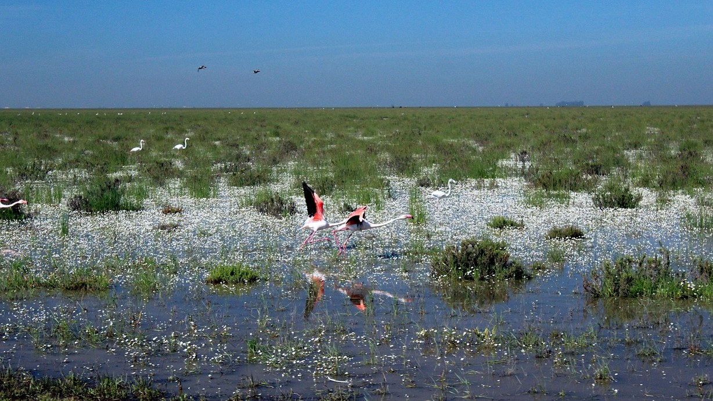

This talk was delivered at the EBD-Seminar series. Some details: 1) It was the last talk of the season of the EBD Seminar Series; 2) In 2025 the ICMAN-CSIC is turning 70 years; 3) This talk marks almost 20 years since my last talk at the EBD and, finally: it was a very hot day in Sevilla. Business as usual.
The talk is about a paper we published last year.
Here you can watch the talk:
Abstract of the talk: Ecologists have traditionally focused on the long-term behavior of ecosystems, neglecting short-term dynamics. While intuitively this position seems to make sense, many recent perspectives from various disciplines suggest the opposite: it is the transient dynamics that is relevant. In this talk, I will present recently published results from the analysis of the aerial surveys of migratory wintering waterfowl in Doñana over the last 40 years. Our study provides empirical evidence for the existence of a catastrophic bifurcation triggered by a tipping point in the dynamics of an endangered vertebrate community, highlighting the relevance of history, transiency and multi-stability in explaining current patterns in biological conservation.


@online{almaraz2025,
author = {Almaraz, Pablo},
title = {Natural Disasters, Catastrophic Bifurcations and Structural
Fragility in a {World} {Heritage} Wetland},
date = {2025-06-26},
url = {https://robustecologies.github.io/talks/2025/06/26/ebd-seminars/},
langid = {en}
}